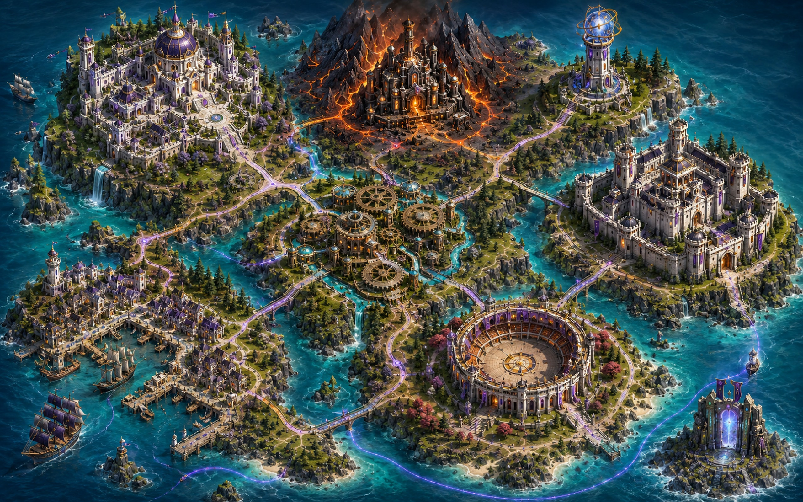
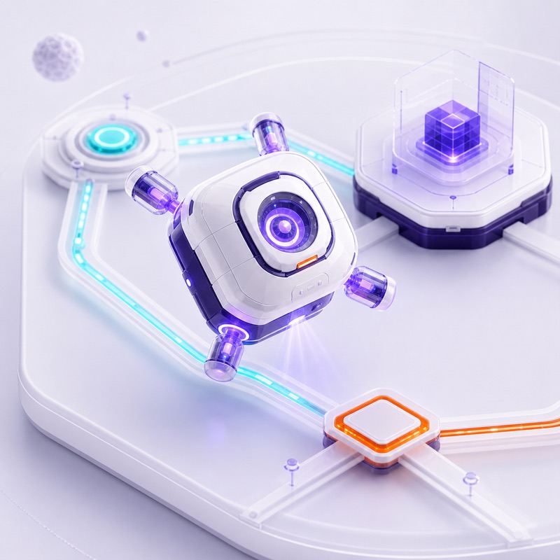

Карта I · Выпускной курс
Открыть карту Академии?
Академия Гуд Программ
Откройте локальную карту города и продолжите карьерный маршрут.
- Прогресс
- 0 из 9
- Опыт
- 0 / 500 XP

Карта I · Выпускной курс
Академия Гуд Программ
Откройте локальную карту города и продолжите карьерный маршрут.
Учебный кейс · Навигация менеджера
Куратор выпускного курса просит проверить, понимаете ли вы структуру интерфейса BPMSoft. Менеджер должен открыть список клиентов, перейти в карточку и найти связанные активности.
Соберите путь пользователя от рабочего места до нужных данных и объясните назначение каждого уровня навигации.
Карта II · Первый проект
После выпуска из Академии вы начинаете работать аналитиком в компании «Системная практика». Первый заказчик — АО «Медные машины», производитель грузовых големов, приводов и комплектующих.
Компания расширяет производство и дилерскую сеть, но заказы дублируются, интеграции работают нестабильно, а изменения сложно выпускать. Ваша задача — разобраться в процессах и подготовить решения, которые можно принять в эксплуатацию.
Запрос заказчика · Планирование производства
Академия Гуд Программ
Учебное рабочее место
Термины интерфейса
Варианты
Выбирайте инструменты в порядке, в котором с ними встретится пользователь.
Результат
Выпускной курс завершён
Вы прошли девять заданий и собрали целостное решение BPMSoft: от интерфейса и данных до доступа, автоматизации и аналитики.
Новое достижение
Вы разобрали базовые возможности BPMSoft и защитили учебное решение по обработке обращений.
Условия задания
Заполните все узлы перед пробным запуском.
Результат
Проект завершён
АО «Медные машины» получило управляемый импорт заказов, разграниченный дилерский портал, наблюдаемые интеграции и понятный процесс выпуска изменений.
Новое достижение
Вы связали требования подразделений, конфигурацию, интеграции и приёмку рабочего релиза.
Хорошее решение видно не по схеме, а по тому, что заказ проходит весь путь без дублей, потерянных прав и ручных обходов. — Бран Коваль
Условия задания
Выберите решение для каждого вопроса этапа.
Результат проверки
CRM-решение принято
Команда связала клиентские данные, продажи, сервис, права и интеграции в наблюдаемый процесс. AI используется как проверяемый помощник, а изменения проходят через понятные критерии приёмки.

Новое достижение
Вы помогли внутренней команде выстроить правила развития данных, процессов, сервиса, интеграций и AI.
Единая картина клиента — не одна большая карточка. Это договорённость команд и систем о том, какие данные они используют и как проверяют результат. — Лиора Вель
Стол решения
Сначала завершите шаг 1: нажмите все три метки на изображении. После этого появится первый выбор.
Сначала найдите все факты на панораме.
Результат проверки
Трансформация принята
Магазины, сайт, склады, франчайзи и контактный центр сохранили свои роли, но теперь используют согласованные данные, ограничения и измеримые события одного клиентского маршрута.
Новое достижение
Вы связали мастер-данные, маркетинг, партнёров, заказы, остатки, сервис и аналитику в доказуемую операционную модель.
Единая сеть — не место, где все делают одно и то же. Это место, где каждый отвечает за свой шаг и никто не спорит с фактами. — Рута Мейл
Условия приёмки
Отмечайте решение системы, которое впервые расходится с подтверждённым фактом. Позднее сообщение пассажиру — уже следствие.
Сначала посмотрите весь поток событий — настройки откроются после выбора первого неверного такта.
Ограниченная зона изменений
Откроются после выбора checkpoint.
После выбора такта здесь откроются только доступные правила. Исходные события не изменятся.
Контрольный прогон повторит те же события от T0 до финального такта — без новых или случайных входных данных.
Результат проверки
Операционный двойник принят
Расписание, пересадки, багаж, пассажирский кейс, партнёры, прогнозирование и внешние операции теперь различают факт, намерение и неизвестный исход. Один поток событий можно повторить и доказать по журналу от источника до пассажира.
Новое достижение
Вы нашли первые расхождения и доказали восстановление на том же наборе событий — без скрытых дублей, утечек и преждевременных обещаний.
Надёжность начинается не там, где всё прошло идеально, а там, где любой результат можно объяснить и повторить. — Лада Ветрова